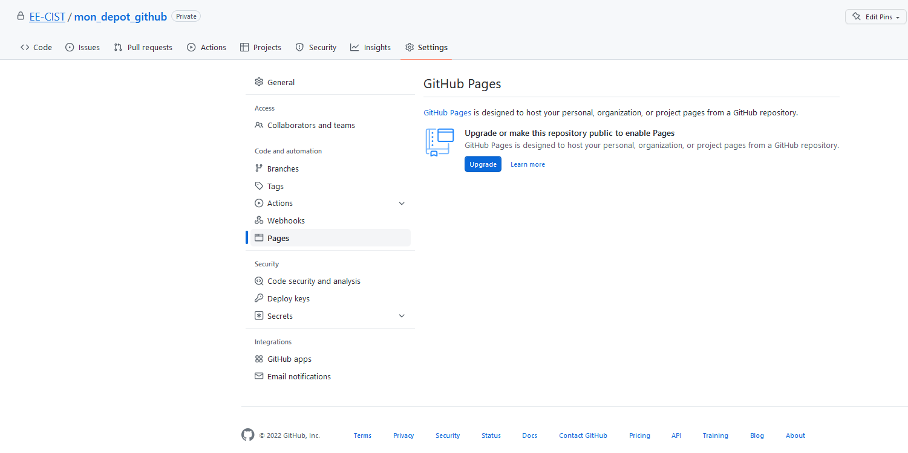

git remote add origin git@github.com:EE-CIST/mon_depot_github.git
?? git branch -M main
git add .
git commit -m "initial"
git push origin mainQuarto & Git
Mon document (notebook, site web) en intégration continue
1 Créer un Quarto (avec Rstudio)
1.1 Plusieurs formats
- Document (article, diaporama…)
- Website
- Book
Mais cela fonctionne de la même façon…

1.2 Fichiers générés
Quarto document


Métadonnées de l’en-tête du dosument Quarto :
https://quarto.org/docs/output-formats/html-basics.html
exemple :

Métadonnées générales :
https://quarto.org/docs/projects/quarto-projects.html#project-metadata
Quarto book
Quarto Website
1.3 Compiler le document
2 Stockage sur Github
https://sigr2021.github.io/git/#
2.1 Installer Git
2.2 Inscription GitHub
2.3 Clefs SSH
2.4 Créer un dépôt
2.5 Pusher son projet
Manuellement
Blablabla
En ligne de commande
Dans le terminal proposé par Rstudio
3 Déployer son document
